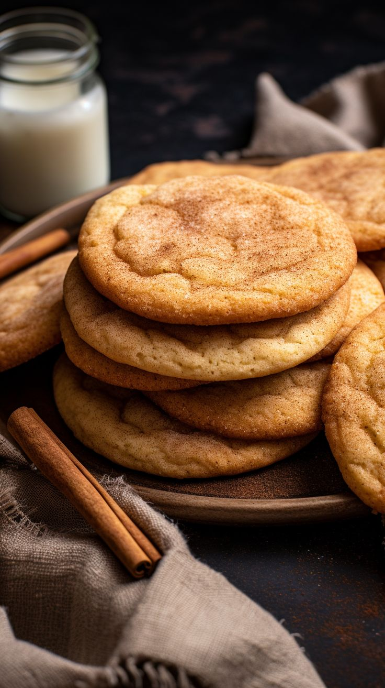

Cookie Recipes
Delicious homemade cookies for every occasion

Classic Chocolate Chip Cookies
25 mins
24 cookies
Easy
Ingredients:
- 2 1/4 cups all-purpose flour
- 1 tsp baking soda
- 1 tsp salt
- 1 cup unsalted butter, softened
- 3/4 cup granulated sugar
- 3/4 cup packed brown sugar
- 2 large eggs
- 2 tsp vanilla extract
- 2 cups semisweet chocolate chips
Instructions:
- 1Preheat oven to 375°F (190°C)
- 2Combine flour, baking soda and salt in small bowl
- 3Beat butter, sugars and vanilla in large mixer bowl
- 4Add eggs one at a time, beating well
- 5Gradually beat in flour mixture
- 6Stir in chocolate chips
- 7Drop by rounded tablespoon onto ungreased baking sheets
- 8Bake for 9-11 minutes until golden brown

White Chocolate Caramel Drizzle Cookies
35 mins
18 cookies
Medium
Ingredients:
- 2 1/2 cups all-purpose flour
- 1 tsp baking soda
- 1/2 tsp salt
- 1 cup unsalted butter, softened
- 3/4 cup granulated sugar
- 3/4 cup packed brown sugar
- 2 large eggs
- 2 tsp vanilla extract
- 1 1/2 cups white chocolate chips
- 1/2 cup caramel sauce for drizzling
- Sea salt flakes for garnish
Instructions:
- 1Preheat oven to 350°F (175°C)
- 2Whisk together flour, baking soda and salt
- 3Cream butter and sugars until light and fluffy
- 4Add eggs one at a time, then vanilla
- 5Gradually mix in dry ingredients
- 6Fold in white chocolate chips
- 7Scoop dough onto baking sheets (2 tbsp per cookie)
- 8Bake for 12-14 minutes until edges are golden
- 9Cool completely then drizzle with caramel
- 10Sprinkle with sea salt flakes

Frosted Red Velvet Cookies
40 mins
20 cookies
Medium
Ingredients:
- 2 1/4 cups all-purpose flour
- 1/4 cup cocoa powder
- 1 tsp baking soda
- 1/2 tsp salt
- 3/4 cup unsalted butter, softened
- 3/4 cup granulated sugar
- 1/2 cup packed brown sugar
- 1 large egg
- 2 tsp vanilla extract
- 1 tbsp red food coloring
- 1 cup white chocolate chips
- 4 oz cream cheese, softened (for frosting)
- 2 cups powdered sugar (for frosting)
- 1 tsp vanilla extract (for frosting)
Instructions:
- 1Preheat oven to 375°F (190°C)
- 2Whisk together flour, cocoa, baking soda and salt
- 3Cream butter and sugars until fluffy
- 4Beat in egg, vanilla and food coloring
- 5Gradually mix in dry ingredients
- 6Fold in white chocolate chips
- 7Drop dough by rounded tablespoons onto baking sheets
- 8Bake for 10-12 minutes
- 9Cool completely before frosting
- 10For frosting: Beat cream cheese, powdered sugar and vanilla until smooth
- 11Frost cooled cookies

Classic Snickerdoodles
30 mins
24 cookies
Easy
Ingredients:
- 2 3/4 cups all-purpose flour
- 2 tsp cream of tartar
- 1 tsp baking soda
- 1/2 tsp salt
- 1 cup unsalted butter, softened
- 1 1/2 cups granulated sugar
- 2 large eggs
- 2 tsp vanilla extract
- 1/4 cup granulated sugar (for rolling)
- 2 tsp ground cinnamon (for rolling)
Instructions:
- 1Preheat oven to 400°F (200°C)
- 2Whisk together flour, cream of tartar, baking soda and salt
- 3Cream butter and 1 1/2 cups sugar until light and fluffy
- 4Beat in eggs one at a time, then vanilla
- 5Gradually mix in dry ingredients
- 6Combine 1/4 cup sugar and cinnamon in small bowl
- 7Shape dough into 1 1/2-inch balls
- 8Roll balls in cinnamon-sugar mixture
- 9Place 2 inches apart on ungreased baking sheets
- 10Bake 8-10 minutes until set but still soft